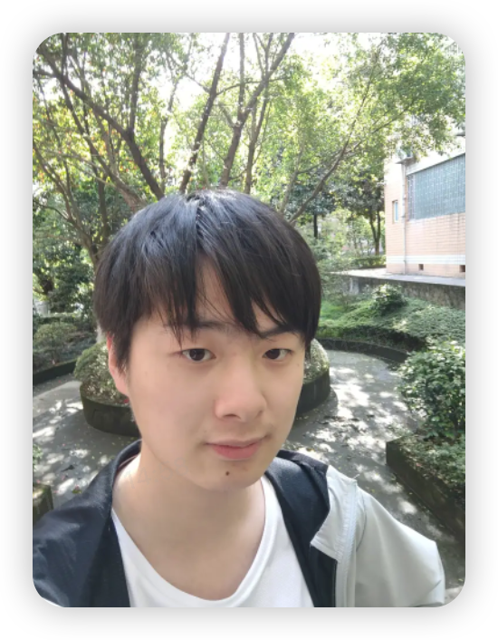

Jiale Zhao
Hi! I’m Jiale Zhao, a computer science graduate (B.Eng., 2025) from Chongqing University of Posts and Telecommunications. I currently work on rubric‑based RLVR for large language models during my internship at Li Auto.
I plan to begin a PhD in Fall 2026. My interests center on large language models and applied NLP, including:
- Human-centered human–AI interaction (HCI)
- Agent-based LLMs and multi-step reasoning
- Rubric-based RLVR
- Self-evolving systems
- Interpretability and controllability
- End-to-end multimodal interactive systems (e.g., GPT-4o)
Background
- Fall 2026 (planned): PhD studies (applications in progress)
- Sep 2021 – Jun 2025: B.Eng., Computer Science, Chongqing University of Posts and Telecommunications
Selected Publications
For full links and the complete publication list, see the Publications page.
Accepted
Under Review
Ongoing Work
- ProcessRubrics — second-author collaboration with Ke Fang and Prof. Lu Cheng (UIC) on process-level rubric learning for improving structured reasoning quality.
- Learning Persona as Behavior — first-author collaboration with Prof. Lu Cheng (UIC) on behavior-oriented persona learning with stronger cross-domain stability.
Selected Projects
All three were production business deliverables I shipped during my Li Auto internship.
Data Flywheel for Code LLM
Evaluation-centric loop (SFT → evaluate → data build → filtering → back to SFT) to continually raise coding capabilities.
- Evaluation-first: Code-eval today is noisy—difficulty too low, specs ambiguous—so I standardized harnesses and rubrics to push harder tasks and capture real capability.
- Linked loops: Evaluation feedback drives harder data construction; the same tooling filters low-quality samples; filtered data re-enters the generation stack for repair and resurfacing.
Multi-step Reasoning + Tool Invocation Agent
Code-LLM agent that plans, writes code, and executes tool calls for precise answers.
- Multi-step reasoning: Breaks complex or code-debugging tasks into structured plans so context can be stitched into a single executable query.
- Tool grounding: Integrates function calls/code execution for real-time data, external APIs, and environment actions when model priors or knowledge bases fall short.
MindGPTo (GPT‑4o-style multimodal app)
End-to-end audio + vision application with paralinguistic control, built from scratch with a modular FE/BE split.
- Mode coverage: Ships traditional audio→ASR→LLM→TTS, production audio2text→TTS pipelines, end-to-end audio2audio, and multimodal audio+image+video→text→TTS workflows.
- Paralinguistic SFT: Large-scale audio data pipelines boost colloquial speech and nuanced cues (beyond laughter/pauses) such as age, gender, compound emotions, emotional actions, and ambient sounds.
